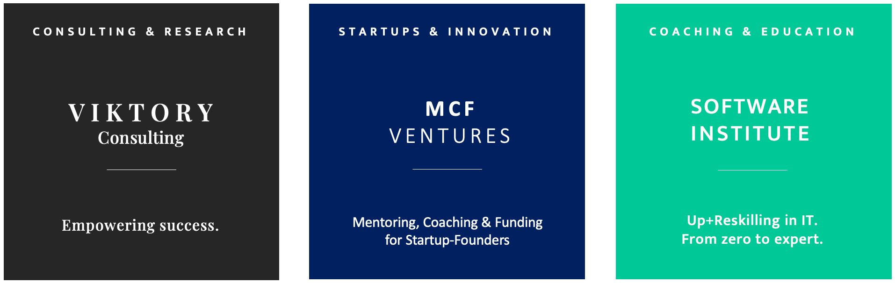

Über uns
Unternehmensgruppe
Zur PRGH Unternehmensgruppe gehören VIKTORY Consulting mit Schwerpunkt Digitaler Strategie, IT-Management und IT-Engineering, das B2B edTech-Startup Software Institute für Up- und Reskilling in IT mit IT-Bootcamps, Masterclasses und Inhouse Coding Academies sowie MCF Ventures für Mentoring, Coaching und Funding von Gründer:innen. Die Umwandlung vom 2018 gegründeten freiberuflichen Unternehmen (Andreas Paech) zur Kapitalgesellschaft (PRGH GmbH, Paech-Rojas Gallardo Holding) erfolgte im Januar 2022.
Unternehmenswerte
Unsere Unternehmenswerte sind Empowerment, Innovation und Scaling. Wir sind Wissensarbeitende, die jeden Tag etwas Neues lernen, verbessern oder schaffen und Coaches, die Kunden, Mitarbeiter:innen und Kolleg:innen entwickeln, befähigen und unterstützen.
Ehrenamtliches Engagement
Die PRGH GmbH ist Gründungsmitglied des Fördervereines der BFI-Stiftung für chancengerechte Bildung, freie und wertegeleitete Forschung sowie Aufstieg und Wohlstand durch Innovation. Außerdem unterstützten wir die JOBLINGE-Initiative Gemeinsam gegen Jugendarbeitslosigkeit als Mentoren.